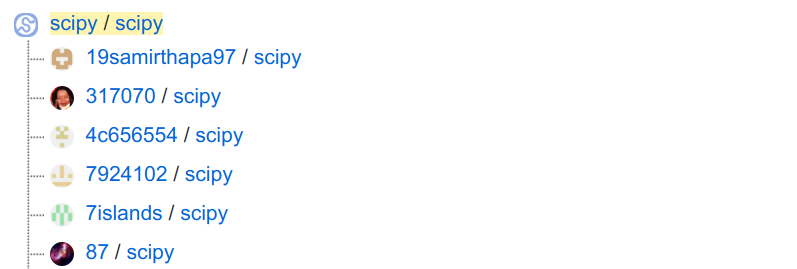

Image by skylarvision from needpix.com
Last year, I gave a workshop about packaging Python projects. One of the participants was a bioinformatics researcher. She needed advice because she wanted to switch from Python 2 to Python 3, but a library she needed was only available for Python 2. Moving the library to Python 3 was pretty interesting, and I’ll share here how I did it — or rather how I would do it if I had the same situation again.
Local Setup
Make sure you can execute Python 2 and Python 3 locally. I like pyenv for that:
$ pyenv install 2.7.18
$ pyenv install 3.8.5
$ pyenv local 3.8.5
$ pip --version
Alternatively, you can use conda to switch between Python 2 and 3.
General project setup
The project should be under version control, and you need to make sure that people can move back if they need to. You need to pin direct and transitive dependencies. You should have a reproducible environment, such as a Docker container with a fixed Python version like 2.7.18-slim-buster. Add a git tag for the current version, deploy the latest one to PyPI, and support your users in pinning that version.
Make sure that you document the current state of the migration to Python 3. Typically this is done via an issue tracker, e.g. the built-in one of GitHub or Jira.
First, make sure that you can execute the tests, that the test coverage is OK (see unit testing series), and that the general style is OK (see static code analysis). Set up a CI / CD pipeline.
Print statements
In Python 2, you could write print statements:
print "hello world"
In Python 3, you have to write print functions:
print("hello world")
Luckily, you can also have print functions in Python 2. And confusingly, it does not behave the same way:
py2>>> print(1, 2, 3)
(1, 2, 3)
py3>>> print(1, 2, 3)
1 2 3
You need to import the backported print function to make the Python 2 function behave like the Python 3 function:
py2>>> from __future__ import print_function
py2>>> print(1, 2, 3)
1 2 3
Note that I didn’t use the print_function — I just imported it.
Applying this small change is tedious, but you can use 2to3 to do it for you:
$ pip install 2to3
$ 2to3 --fix=print .
Keeping Python 2 Compatibility
You should have a version that works for Python 2 and Python 3 in exactly the same way for a while. For bigger projects with lots of dependencies, it’s a big help if they can move gradually forward.
Python 3 moved/renamed parts of the standard library. This breaks compatibility with Python 2. However, the workaround is simple:
try:
from urllib.parse import urlparse, urlencode
from urllib.request import urlopen
except ImportError:
from urlparse import urlparse
from urllib import urlencode
from urllib2 import urlopen
Even nicer is the compatibility library six:
$ pip install six
six can then be used like this in both Python 2 and Python 3:
from six.moves.urllib.parse import urlparse, urlencode
from six.moves.urllib.request import urlopen
When you write code only to keep the support for older versions, make sure you add a string that is easy to find. Something like “support for Python 2”.
Iterators
Python 2 creates a list when you call range(10) whereas Python 3 creates a
range object for the same code. In some rare cases, you actually need the list
and thus need to change it to list(range(10)).
input and raw_input
Python 2 has input and raw_input, but Python 3 only has input. The raw_input of Python 2 is like the input of Python 3.
Division and Rounding
If you apply / to two integers, Python 2 gives you an integer division. Python 3 gives you a float as a result. You can still do integer division with //, which works in both Python 2 and 3:
>>> 1 / 2
# Python 2: 0 vs Python 3: 0.5
The rounding behavior at x.5 also changed:
- Python 2: if two multiples are equally close, rounding is done away from 0
- Python 3: if two multiples are equally close, rounding is done toward the even choice
>>> round(2.4)
# Python 2: 2.0 vs Python 3: 2
>>> round(2.5)
# Python 2: 3.0 vs Python 3: 2
>>> round(2.6)
# Python 2: 3.0 vs Python 3: 3
There are ways to get the same rounding behavior in Python 2 and 3.
Unicode and Strings
Unicode was a big pain in Python 2 and got a lot simpler in Python 3. Unicode support was only added later to Python 2. In Python 2, there was a difference between a Unicode string and a string. Essentially, a string was a bytes object containing ASCII:
>>> a = u"abc"
>>> type(a)
<type 'unicode'>
>>> b = "abc"
>>> type(b)
<type 'str'>
>>> c = b"abc"
>>> type(c)
<type 'str'>
>>> ord('ö')
Traceback (most recent call last):
File "<stdin>", line 1, in <module>
TypeError: ord() expected a character, but string of length 2 found
>>> 'ü'[0]
'\xc3'
>>> 'ü'[1]
'\xbc'
In Python 3, it looks like this:
>>> a = u"abc"
>>> type(a)
<class 'str'>
>>> b = "abc"
>>> type(b)
<class 'str'>
>>> c = b"abc"
>>> type(c)
<class 'bytes'>
>>> ord('ö')
246
>>> 'ü'[0]
'ü'
I could write a lot about Unicode and string representations, but to keep it brief:
- Python 2 u"something" is the same as Python 3 "something" or u"something"
- I would not use
from __future__ import unicode_literals. You might want to read more about unicode_literals. - How is unicode represented internally in Python?
Pure Python and Universal Wheels
A wheel file is a form of distributing Python code. Python code is considered pure if it does not have C extensions. If pure Python code is compatible with Python 2 and Python 3 and distributed via a wheel file, that file is called universal. It should work on every machine with every Python version.
You should always distribute your code in the form of a source distribution and a wheel distribution. If you can, try to create and publish one universal wheel.
Create a version support policy
Photo by Sebastian Herrmann on Unsplash
Library creators need to decide which Python versions they want to support. Newer versions of Python have killer features you want to have and supporting all versions takes a lot of time. Make it transparent which versions you want to support and when you want to drop the support. It’s best to link this to bigger projects, e.g. the last 3 major Python versions.
You should also know that the Python release cycle was changed in PEP-602.
Remove Python 2 Compatibility
Photo by JESHOOTS.COM on Unsplash
Supporting Python 2 means you need to add additional code and likely that you cannot use some of the killer features of newer Python versions.
When you remove the support for a Python version, do it in one git commit so that the change is clear. Search for that string:
$ grep -rnI "support for Python 2"
Use the new stuff!
Python 3 has some super cool features you should use when you can. Migrating to Python 3 opens up a whole new world: Killer Features by Python Version
pyupgrade can help you to use new-style syntax, such as:
dict((a, b) for a, b in y) # -> {a: b for a, b in y}
"%s %s" % (a, b) # -> '{} {}'.format(a, b)
It’s not strictly necessary to do this, but it makes your code more modern and easier to read.
Forking the project
I was pretty lucky that the maintainers of propy were welcoming the changes. However, with free software, you are not bound by the maintainers’ support. You can simply create a so-called fork: A copy of the original project which you control.

SciPy has over 3000 forks. Screenshot of GitHub by Martin ThomaForking happens all the time with free software. It’s also a mode of development, where independent developers make changes in their copy (their fork) and create a merge request (GitHub calls this a pull request, PR).
You can also upload your fork to PyPI, but please only do this if you want to maintain that fork and continue the independent development.
Metaclasses
There are topics like metaclasses and exception scopes which I haven’t covered. If you need that, I recommend this tutorial by Mike Müller:
Anders Hovmöller also wrote an interesting article about this topic. Check his “surprises in production” section: Moving a large and old codebase to Python3
TL;DR: How do I move from Python 2 to Python 3?
- Get a professional Python 2 setup
- Move to a state where your codebase supports Python 2 and Python 3
- Let it run for a while, make sure it works
- Remove Python 2 support
Related Resources
- Mike Müller: Migration from Python 2 to 3, at PyCon US 2020.
- protpy was the library I moved. I created propy3.